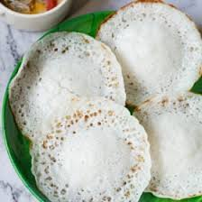

Appam is delicate and tasty breakfast
Traditionally, appam are fermented with a local alcoholic drink known as toddy
which is a drink made from palm flower or coconut flower.
Toddy, which is made from palm flower or coconut flower, is also known as “kallu” in Tamil and Malayalam or “tadi” in Hindi.
Ingredients
- Rice
- Sugar
- rice flour
- Grated coconut
- coconut milk
- yeast
Recipe instructions (taken from the book
- First rinse 1.5 cups regular white rice in water a few times. Then soak the rice with 2 cups of water in a bowl for 4 to 5 hours. While soaking cover with a lid.
- Drain all the water and discard it. Add the drained,
soaked rice to blender or grinder jar. Also add ½ cup grated fresh coconut, ¼ cup poha (flattened rice), ½ teaspoon salt and 2 tablespoons sugar.
- Add ¾ cup water (or as needed) and blend or grind the ingredients to a smooth and fine flowing batter
- Mix ½ teaspoon dry active yeast first in 1 to 2 tablespoons of lukewarm water. Add this yeast solution to the batter and mix well.
Cover and allow to ferment for 8 to 12 hours, depending on the temperature conditions. The batter will rise and double up the next day.
- A well-fermented batter will have many tiny air-pockets.
- Heat an appam pan or a seasoned kadai/wok with handles.
Sprinkle about ½ teaspoon oil on the pan and spread it all over on the pan.
If using nonstick kadai, then skip smearing the oil.
- The appam pan or appachatti works best as you get soft fluffy texture in the center and crisp texture towards the circumference.
Spread a ladle full of the batter (about ¼ to ⅓ cup) into the hot pan.
- Turn and tilt the pan in circles so as to spread the batter into a round circle.
Regulate the heat as needed.
If the pan becomes too hot, the batter cooks faster and you wont be able to make a neat round batter with thin edges and a soft center
- Cover the pan with lid and let the appam cook for about 2 minutes or until the base becomes nicely light golden and the center firms up and becomes soft and fluffy.
- Remove and serve appam hot or warm. Repeat with remaining batter to make as may appam as you need.
Store any remaining batter in the refrigerator and use within 1 day.
- Appam goes very well with vegetable stew and sweetened coconut milk. I like to serve them with both! It can also be served with veg korma or potato stew.
Return to top
Return to main page